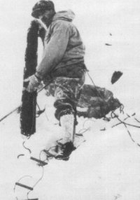
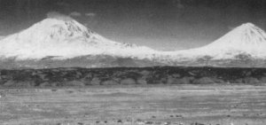
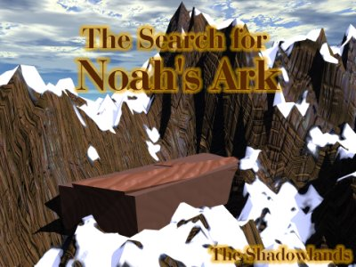
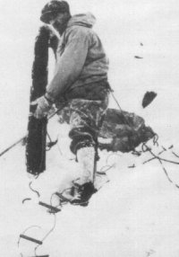
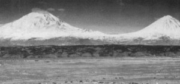

© dr. elfred lee

© raphael navarra
© Bill Crouse

© John Morris
|  |
Does Noah's Ark still sit partially hidden on the slopes of Mt. Arrat ? Is the story of Noah in the Bible true? We'll attempt to answer those questions and a few more and you can decide for yourself.
* Is the Story of Noah True?
- Universal flood?
- The animals
* About the Ark
- Building of the
* Eye witness accounts
- Col. James Irwin
- Fernand Navarra
- George Hagopian
* Other Evidence and Information
* Links to related sites
The
Universal Flood - Was the earth once covered completely
for a time with water, caused by a great flood? The earliest known
civilization, the Summerians (3000 B.C.) believed that such a flood occured.
The mythology of Greece also shares this Judeo-Christain story. Almost
every major culture has a story about a great flood that covered the planet
and how one man and his family survived it.
Universal Flood - Compiled & Written By Bernard W. Kelly Sr.(bernard@theshadowlands.net)
Creation myths fall into 5 general classifications:
1. from mayhem or void (ex nihilo)
2. from a cosmic egg or primal maternal
mound
3. from world guardians who are estranged
4. from a process of earth-diving
5. from several stages of emergence from
other worlds
A great number of creation myths will
combine two or more of these forms.
A startling number of creation lores have fixed to them the "flood" myth. In the mythology of most rudimentary cultures there can be discovered a flood epic, with the deluge being of such mammoth magnitude that it is surmised to have blanketed the complete Earth. Such was the destructive force of this flood that few land animals and plants endured it. In Western civilization the most famous version is the story of Noah and the Ark as declared in Genesis. Although it may be the best known, the account of Noah's adventure is neither the only such legend nor the oldest such legend.Legends of a flood can be found in the folklore of such diverse locations as the Middle East, India, China, Australia, southern Asia, the islands of the Pacific, Europe, Africa , and the Americas, in the myths of the Arikara (Plain Indians), Arandan (Australia), Aymara (Bolivia-ice version), Cheyenne (two floods), Yuricara (Bolivia-fire version), Fans (Africa-lightning version) Wapangwa (Tanzania), Maya, Ipurina (Brazil), some Shawnee, Ziusudra (Sumeria), Utnapishtim (Babylonia), Mande (Mali), Chiricahua Apache, some Eskimo, Joshua Indians (Oregon), Navajo, Netsilik (Greenland), and such other American Indian tribes as: Pima, Pomo, Salinas, Wyot, Yana, Kato, Yuma, and Muysca (Peru).
But the flood legend on which the story
of Noah is based had its origins among the peoples of ancient esopotamia,
in the epic "Gilgamesh" (It was during the Sumerian era that a great flood
overwhelmed Mesopotamia. So great
was this flood that stories about it
worked their way into several ancient literatures. The Sumerian counterpart
of Noah was Ziusudra, and from him was developed the Babylonian figure
Utnapishtim, whose story of the flood was related in the 'Epic of Gilgamesh'.)
The Greek flood legend has Zeus deciding
to destroy the Earth, but he allows the good King Deucalion and his family
to be saved by taking refuge in an ark well stocked with provisions.Texts
from the 6th century BC in India tell the story of Manu, (meaning "man")
who is warned by a fish about a coming flood. In the legend Manu
builds a boat and saves himself.
In China the flood myth had a different
twist than the legends told in the West. The flooding of the land year
after year was seen as an obstacle to successful agriculture. The floods
were made much less damaging through the
efforts of a hero named Yu the Great,
who dredged the land to provide outlets to the sea for the water.
At this interval in history, there was
one terra firma mass Europe, Africa, America, and all other lands were
bordering There were lakes and rivers that dotted the vista but most of
the water was well underneath the earth's
surface. The deluge started with torrential
downpours followed by the splitting of the earth . Stress on the
earth's crust caused it to fissure northward and southward. The earth was
polarized open at a rate of 3 miles per second encircling the globe in
approximately 2 hours. This split created continental plates that divided
east from west.
The succincted rock beneath the continental plates was forced upward creating the mid-Atlantic ridge currently located in the center of the Atlantic Ocean. As the ridge was pushed upward, the continental plates were pushed apart at rates up to 45 miles per hour. The two continental plates eventually collided with other plates causing the land to move upward or downward. The upward locomotion created the mountainous regions of the world. The downward activity resulted in deep trenches in the ocean floors. This explains why major mountain regions and ocean trenches are parallel to one another.
Waters that were initially released from
the earth ruptured forth into the atmosphere at supersonic speeds. As the
water went higher and higher into the atmosphere, much of it became solid
ice. Rain, hail, and snow fell on the
earth for forty days and forty nights.
All life forms that found themselves on tops of mountains were instantly
frozen in time. This explains the fish and animal fossil remains in nearly
every mountain region of the world, and
how some were completely preserved. The
so called "ICE AGE" was in fact just a matter of days.
Sediment from displaced earth rapidly settled trapping animal and plant life beneath it. The once thriving cities disappeared under tons of rock and then mud. The decomposed remains of plants, trees, and animals beneath this sediment currently provide the world's oil supply.
After one hundred and fifty days, the water receded and dry land appeared. Noah and his family came out of the ark 370 days after the torrent began. The Ark rested on Mount Ararat where some believe it remnants are to this day in northern Turkey.
Jewish historians as well as many ancient
civilizations throughout the world spoke of the great flood. Scientists
have proven conclusively that there was indeed a flood that covered
the entire earth and this occurrence is carved in stone or clay in nearly
every primordial civilization. Thousands of individuals have reportedly
seen the Ark. In recent history, there were two major sightings of the
ark. In 1883, the Turkish military found the ark while investigating damage
caused from a massive earthquake. They not only found and entered the ark,
but also returned with pieces of wood from the structure. Because of the
acceptance of Darwin's theory of Evolution, the find was ignored by most
in the western world. However, in 1917, the Czar of Russia sent an expedition
to find and document the location of the ark. It was found and photographed.
Unfortunately, the Czar's government was toppled by the communists and
documentation was either destroyed or hidden in Kremlin safes. The Czar's
daughter spoke of the expedition years later, and had a cross made from
the wood of the ark. Since this time, numerous glimpses have been reported.
Racial fighting and terrorist camps in the area have restricted contemporary
attempts to ascertain the Ark. This territory is currently under the control
of Kurdish
terrorists.
The US military obviously know the locus
and have satellite photographs of the Ark. to prove it. Because of security
considerations, they will not release these photographs. American Air force
navigators used the Ark as a
landmark while on bombing raids during
World War II. God promised Noah He would never destroy the earth in a flood
again. He made a covenant with man and placed the rainbow in the clouds
as a sign. Each time the rainbow is observed, it is a reminder of this
covenant God made with man
.
Sources : www.cybercomm.net
www.ghgcorp.com
© dr. elfred lee

© raphael navarra
© Bill Crouse

© John Morris
The Animals
section by TNMoon@theshadowlands.net
Genesis 6:19-21
19) And of every living thing of all
flesh you shall bring two of every sort into the ark, to keep them alive
with; they shall be male and female. 20) Of the birds after their kind
of animals after their kind, and of every creeping thing of the earth after
its kind, two of every kind will come to you to keep them alive. 21) And
you shall take for yourself of all foos that is eaten,
and you shall gather it yourself; and
it shall be for you and for them.
WHAT SORT OF ANIMALS WENT ONTO THE ARK?
There were land mammals, land reptiles,
terrestrial birds, dinosaurs (that is another article), amphibians, and
animals now extinct that went onto the ark.
....(Only air breathing animals needed to be on the ark)
HOW MANY ANIMALS WERE ON THE ARK?
There are two views on this subject.
1) Authorities on taxonomy estimate that there are about 18,000 species of animals living today. If we double that for extinct species that would give us 36,000 and then multiply by 2 ( for mates), and we would have 72,000. If we add for clean animals the number could be around 75,000 animals on the ark.
2) Creationist's beleive the number is
much lower. It states in Genesis that God created these "kinds" with a
potential for genetic diversity. The animals would be from each "genus"
and not "species". A "genus" is the smallest division of plants and animals
that can be recognized without a specific study.( Example: There would
be two Bears, not Black Bears, Panda Bears,
Polar Bears...etc...) The number could
be anywhere from 2,000 to 16,000 animals on the ark.
HOW COULD THE ARK HOLD THOUSANDS OF ANIMALS?
The ark was around 450 feet long, 75
feet wide and about 45 feet high. That is a lot of room if you were to
compartmentalize. The ark was the equivalent of 569 railcars. An average
double decked stock car can hold about 240 sheep. That would be room for
136,560 sheep! Most animals were more than likely very small, even
infants. Also, more birds, reptiles and amphibians could fit into assigned
compartments.
....The ark was more than likely a lot
like an intensive livestock confinement for temporary confinement. The
housing probably took up about 46% of "ark space".
HOW COULD ONLY EIGHT PEOPLE(Noah, his
wife, their three sons, and their wives) FEED ALL THOSE ANIMALS?
If we look at Genesis 1:30 it seems to
be saying that animals and people were at the time of Noah..."vegetarians".
30) Also, to every beast of the earth, to every bird of the air, and to
everything that creeps on the earth, in which there is life, I have given
every green herb for food; and it was so.
So, Noah did not have to worry about
the lion's trying eat the sheep. Noah had compressed grains, fruit, and
nuts stored away. Food took up about 6-12% of space.Water took up
about 9% of space. There was also plenty of extra water that could be collected
from outside.
There is also speculation that the animals may have gone into some sort of hibernation. Their metabolisms would haved slowed down incredibly. They would not have to eat much and the waste would have been little.
WHAT ABOUT WASTE?
There would have been about 12 tons of
wet excreta produced daily . That is consistant with intensive poultry
houses. The animals compartments where designed to minimize cleaning. The
floors were more than
likely sloped, and slatted with manure
pits underneath. If animals couldn't turn around the the compartments,
there could possibly be manure gutters behind them to catch waste.
There was also biological pest control: ducks, cats, and mongooses.
Earthworms could have been used to biodegrade the manure as well.
The mystery of Noah's ark is really not a mystery. Noah was instructed on exactly how to build the ark. It took Noah 120 years to build the ark. It must have been extremely hard and detailed work. The outcome not only worked and saved the animals for the future, but, they were well cared for too. They were fed, cleaned, and somewhat comfortable.
Sources: New King James Version, Creation
Science Researchers, and James Browning.